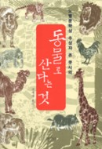

'동물로 산다는 것'을 읽다가 중간에 읽기를 포기했다. 초반부는 소설이고 후반부는 존쿳시의 평론이였다.나는 도대체 이 책에서 무엇을 말하는지를 모르겠다.
'동물은 우리의 친구인가? 아니면 소모품에 불과한가?' 이런 주제를 가지고 알맹이는 제시하지 않은 채 빙빙 둘러가며 아이스크림 핥듯이 피상적인 얘기만 늘어놓는 느낌이다.
이미 내가 알고 있는 동물에 대한 지식 수준내에서 이야기해서 그런 것이라고 생각한다.
--동물에 관한 내 생각
동물공장에서 상품처럼 생산되는 동물들이 불쌍하다고 생각된다. 그리고 땅에서 나는 음식을 먹는다는 것이 더 좋다고 느껴진다. 따라서 채식을 지향할 것이다. (그래도 고기가 맛있기에 자주 먹을듯...ㅠㅠ)